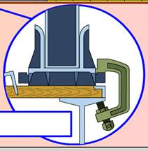

Altynjy usul boýunça berkidilende tehnika dört MK-765 gysgyç-çekmesi ýa-da dört S-765 gysgyjy bilen berkidilýär.
MK-765 gysgyç-çekmelerini we S-765 gysgyçlaryny demir ýollaryň açyk wagonlarynda daşalanda demir ýol açyk wagonlarynda berkitmek üçin ulanmaga rugsat berilýär.
Gysgyç – çekmeler
Gysgyç-çekme bir ujunda tutawaçly, beýleki ujunda saklaýjy gaýkaly tegelek çybykdyr. Çybyk boýunça saklaýjy gaýkanyň berkidijisi bolan skoba erkin süýşýär.
surat. Maşynlary gysgyç-çekmeler bilen berkitmek
Maşynlary MK-765 gysgyç-çekmeleri bilen ýerleşdirmegiň we berkitmegiň tertibi.
1. Saklaýjy gaýka soňuna çenli towlanýar we onuň üstüne berkidiji goýulýar.
2. Gysgyjyň ýokarky şahy ikinji we soňundan öňki direg tigirçekleriniň garşysynda zynjyryň trakynyň inine geýdirilýär.
3. Gysgyjyň aşaky şahy açyk wagonyň gapdal balkasynyň tekjesinde goýulýar.
4. Saklaýjy bolt gurnaýyş lomy ýa-da açar bilen soňuna çenli towlanýar we hökman gysgyjyň aşaky şahynyň üstünde bolan kontrgaýka bilen saklanylýar.
Gysgyç
Gysgyç saklaýjy (gysyjy) boltly demir skobadyr.

Maşynlary gysgyçlar bilen berkitmek
1. Gysgyjyň ýokarky şahy ikinji we soňundan öňki direg tigirçekleriniň garşysynda zynjyryň trakynyň çykyntgysyna geýdirilýär.
2. Gysgyjyň aşaky şahy açyk wagonyň gapdal balkasynyň tekjesinde goýulýar.
3. Saklaýjy bolt gurnaýyş lomy ýa-da açar bilen soňuna çenli towlanýar we hökman gysgyjyň aşaky şahynyň üstünde bolan kontrgaýka bilen saklanylýar.
4. Her bir maşyn kese süýşmeginden goşmaça 12 skoba ýa-da iki gapdal dörtgyraň agaç bölegi bilen berkidilýär.
Maşyny ýüklemäge taýýarlamak
HZM açyk wagonda berkitmek üçin ýüklemezden öň şular zerurdyr:
— zynjyrlary şosse boýunça hereket edilýän ýaly dartmaly;
— hapadan, gyşyna bolsa gardan we buzdan gowy arassalamaly;
— tormoz ulgamynyň we diňiň saklaýjylarynyň sazlygyny barlamaly;
— ulanyş boýunça gollanma laýyklykda demir ýol boýunça daşamak üçin ýagdaýa getirmeli.
HZM açyk wagonda ýerleşdirmegiň we berkitmegiň tertibi
1. Maşyn açyk wagonyň uzaboýuna okuna simmetrik goýulýar.

2. Her bir maşyn ikinji we soňundan öňki direg tigirçekleriniň garşysynda gurnalýan dört gysgyç ýa-da gysgyç – çekme bilen berkidilýär.
Ikinji we soňundan öňki direg tigirçekleriniň aşagynda ýerleşýän zynjyrlaryň traklarynyň aşagyna tutawaçly çybyk salynýar. Çybygy onuň uzaboýuna okunyň daşyndan (islendik tarapa) öwürmek bilen, tutawaç trakyň ýokarky tekjesine goýulýar. Skobanyň ýokarky şahy trakyň üstünde, aşaky şahy bolsa – açyk wagonyň gapdal balkasynyň tekjesinde goýulýar.


3. Her bir maşyn kese süýşmeginden goşmaça 12 skoba ýa-da iki gapdal dörtgyraň agaç bölegi bilen berkidilýär.
Ýüklenen maşynlary daşamaga taýýarlamak
Açyk wagonda ýüklenen we berkidilen HZM daşamak üçin şular zerurdyr:
— yza ýöreýiş geçirişine goýmaly we tormozlamaly;
— geçiriş gutusynyň swipçegini we tormoz pedalyny şondan soň möhürlemeli;
— ýangyç beriş swipçegini nol ýagdaýyna goýmaly.